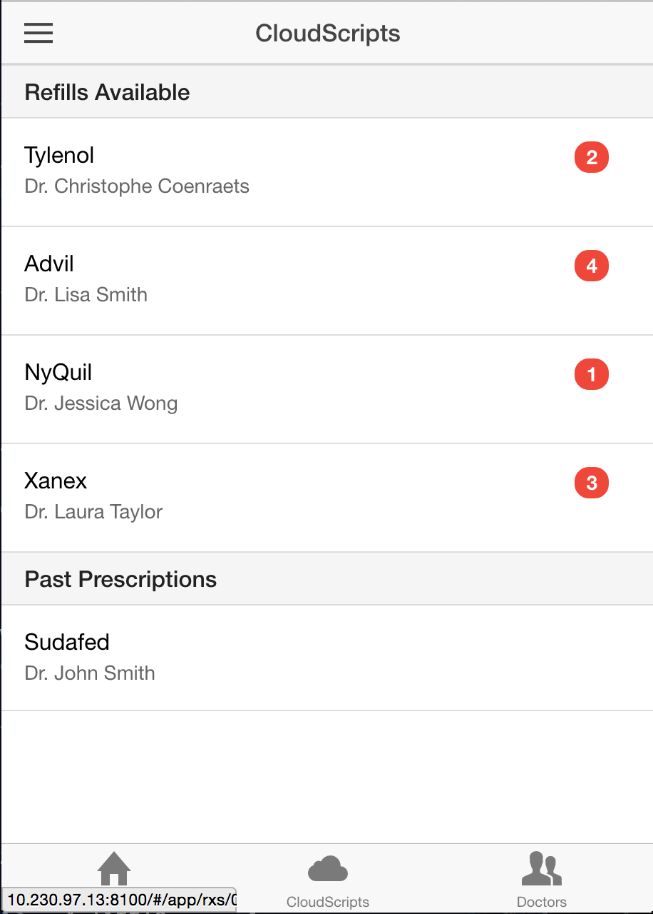
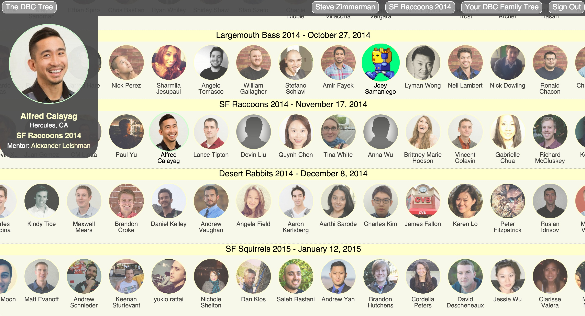
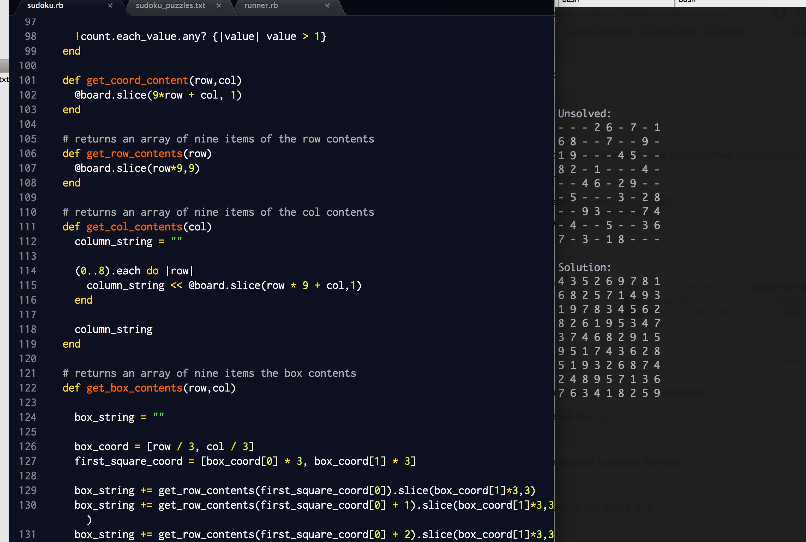

CloudScript 
{kind=link}
A doctor/patient communication and prescription management web and mobile app that allows users to video chat and message with their doctor in real time while allowing patients to fill prescriptions and have them delivered in under 90 minutes. I was team lead for this week-long project where we ambitiously chose to develop the app with completely unfamiliar technologies including io.js, Node, Express, Angular, MongoDB,Firebase, WebRTC Gulp and AWS.
Over the week developing both the web and mobile app, our team was able to rapidly learn and apply more than just the skills required for learning the new technologies, but also the importance of team dynamics and soft skills. We learned about the importance of team communication, individual personalites, feedback and engineering empathy.
DevBootcamp Family Tree 
{kind=link}
My phase 2 solo project creating a UI heavy, social network for Dev Bootcamp students that allowed users to easily view their mentorship lineage as well as current, past or future classes. Created in Javascript/JQuery.
Craigslist Remake
A simple remake of Craigslist using Ruby, Sinatra and ActiveRecord as well as CRUD and MVC best practices.
Solving Sudoku
{kind=link}
A brute force solution that solves any Sudoku puzzle utilizing ruby, completed the first week of Dev Bootcamp.
Happy Ball
My first project, built the day I learned javascript.